Controlled use of fire in the Indian Middle Palaeolithic
Jha, Samrat & Sanyal (2021) · Palaeogeography, Palaeoclimatology, Palaeoecology
Coverage of our published research in the national and international press.
Jha, Samrat & Sanyal (2021) · Palaeogeography, Palaeoclimatology, Palaeoecology
Deepak Kumar Jha (2021) · Time Scavengers
Huber, Hammann, Loeben, Jha et al. (2023) · Scientific Reports
Dhiman et al. (2023) · PLOS ONE
Guagnin et al., incl. Jha (2023) · Archaeological Research in Asia
Ramírez-Pedraza et al., incl. Jha (2024) · Nature Communications
Jha, Sinha, Jha & Ajithprasad (2024) · Quaternary Environments and Humans
Jha, G. et al., incl. Jha, D.K. (2025) · PNAS Nexus
IIT (ISM) Dhanbad has become the first Indian Institute of Technology to offer an open elective in Geoarchaeology. Conceptualised by Dr. Deepak Kumar Jha, the course runs from the winter semester and is open to undergraduate, postgraduate and PhD students across disciplines.
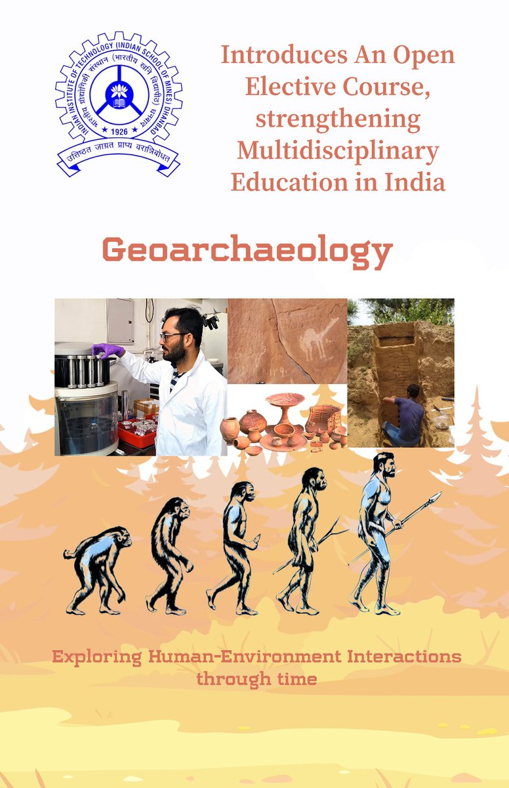
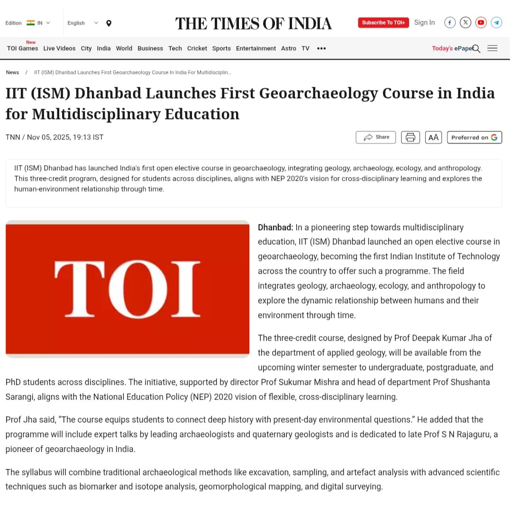
The Times of India 5 November 2025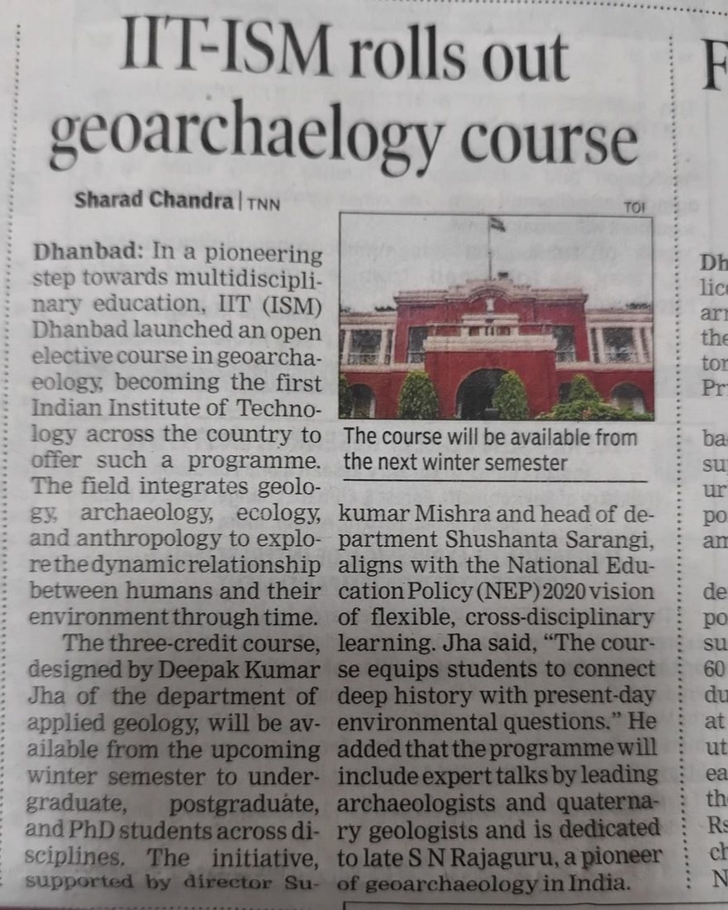
The Times of India — print 5 November 2025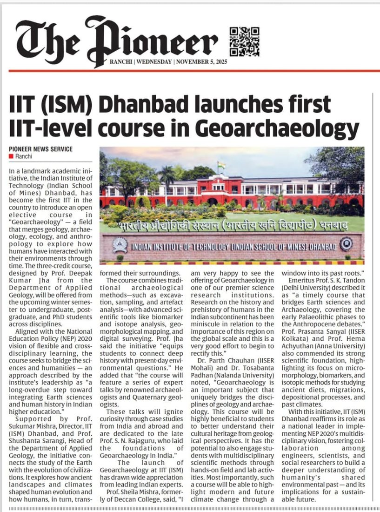
The Pioneer, Ranchi 5 November 2025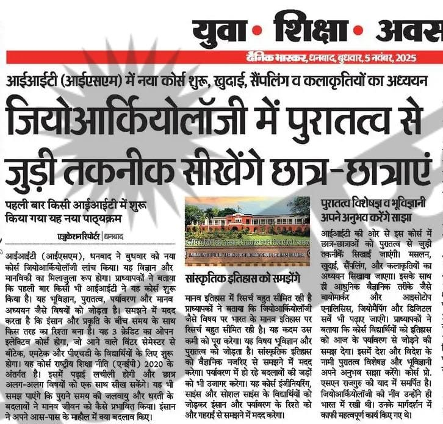
Dainik Bhaskar 5 November 2025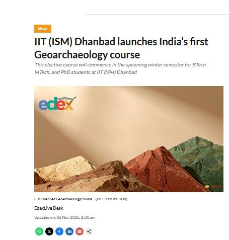
EdexLive 6 November 2025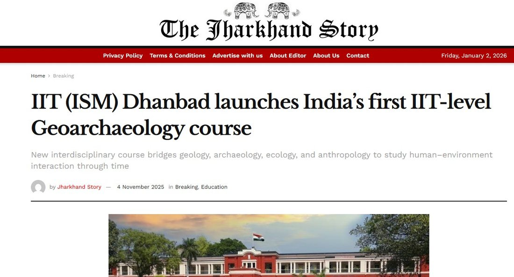
The Jharkhand Story 4 November 2025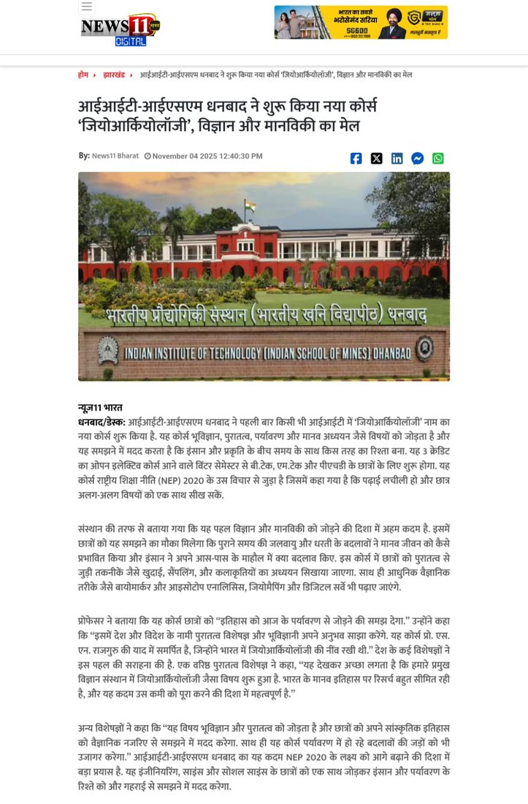
News11 Bharat 4 November 2025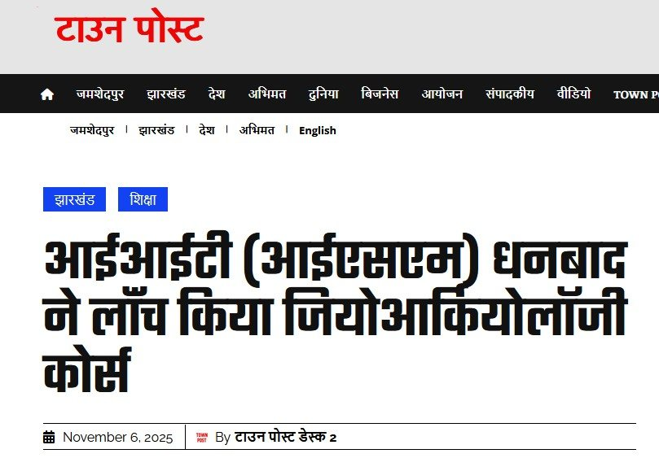
Town Post 6 November 2025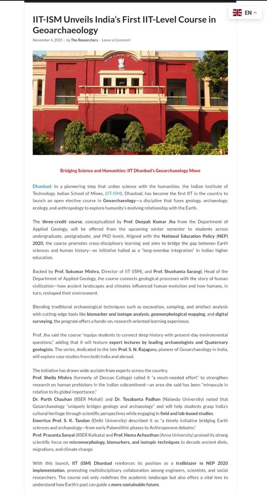
The Researchers 4 November 2025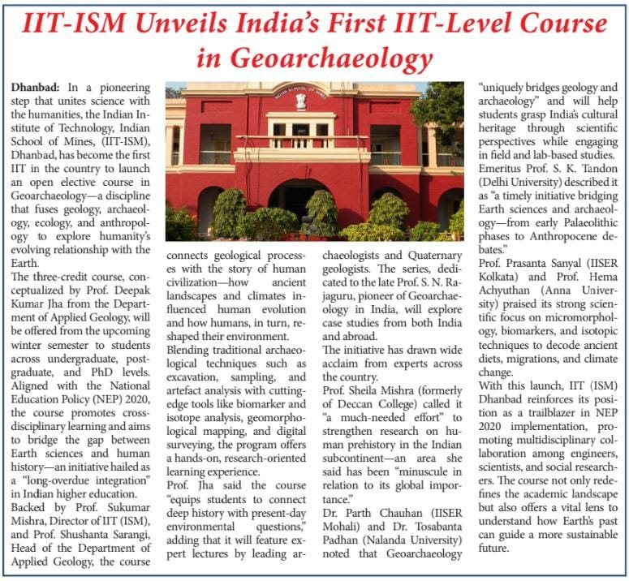
Feature spread November 2025